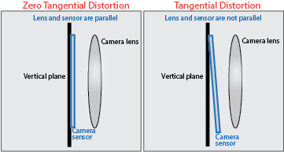

相机畸变通常有两种径向畸变、切向畸变(radial distortion, tangential distortion )
切向畸变主要是有棱镜与sensor偏移引起的 
畸变矫正
\(\begin{aligned}
y_{\mathrm {u} }=y_{\mathrm {d} }&+(x_{\mathrm {d} }-x_{\mathrm {c} })(K_{1}r^{2}+K_{2}r^{4}+ K_{3}r^{6} + \cdots )+(P_{1}(r^{2}+2(y_{\mathrm {d} }-y_{\mathrm {c} })^{2}) \\
&+2P_{2}(x_{\mathrm {d} }-x_{\mathrm {c} })(y_{\mathrm {d} }-y_{\mathrm {c} }))(1+P_{3}r^{2}+P_{4}r^{4} + \cdots ) \\
x_{\mathrm {u} }=x_{\mathrm {d} }&+(y_{\mathrm {d} }-y_{\mathrm {c} })(K_{1}r^{2}+K_{2}r^{4}+ K_{3}r^{6} + \cdots )+(2P_{1}(x_{\mathrm {d} }-x_{\mathrm {c} })(y_{\mathrm {d} }-y_{\mathrm {c} })\\
&+P_{2}(r^{2}+2(x_{\mathrm {d} }-x_{\mathrm {c} })^{2}))(1+P_{3}r^{2}+P_{4}r^{4} + \cdots )
\end{aligned}\)
$(x_{\mathrm {d} },\ y_{\mathrm {d} })$ 畸变图像上的点
$(x_{\mathrm {u} },\ y_{\mathrm {u} })$ 解畸变之后的点
$(x_{\mathrm {c} },\ y_{\mathrm {c} })$ 畸变中心，通常是灭点(cu, cv)
$K_{n}$ 是径向畸变参数，通常只用到$K_1,K_2,K_3$
$P_{n}$ 是切向畸变参数，通常只用到$P_1, P_2$
$r = \sqrt {(x_{\mathrm {d} }-x_{\mathrm {c} })^{2}+(y_{\mathrm {d} }-y_{\mathrm {c} })^{2}}$ 是畸变点离中心点的欧拉距离
一般来说桶形畸变$K_1$是负数，枕形畸变是正数